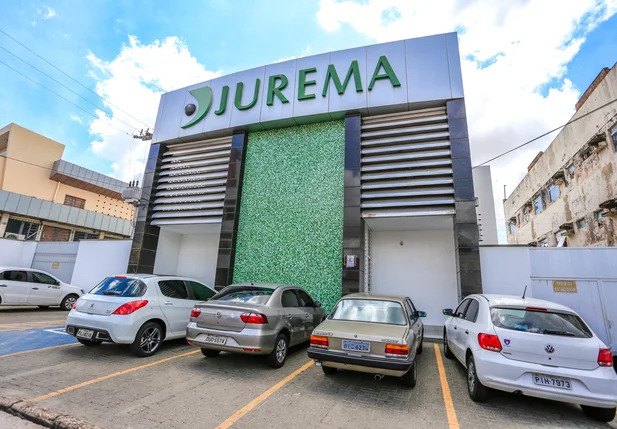

MAIS DE 43 ANOS DE EXPERIÊNCIA EM CONSTRUÇÃO
A Construtora Jurema é uma empresa no ramo da construção civil, que está localizada na cidade de Teresina-PI, há mais de 43 anos atuando no mercado nacional. A Construtora Jurema está presente na edificação de mais de 2.300 unidades habitacionais, com prédios de excelente padrão em conforto e alto nível satisfação de seus clientes, serviços de saneamento e implantações de estradas e mobilidade urbana, sempre visando a qualidade de vida das pessoas.